This is where I am today. After having my deep-space astrophotography setup for some time, I learned that professional astrophotographers, and even NASA, use PixInsight. It allows me to cut out all the noise from the unedited images taken from my telescope and elevate the nebula hidden in the raw image. Every time I finish editing, the final product looks stunning.
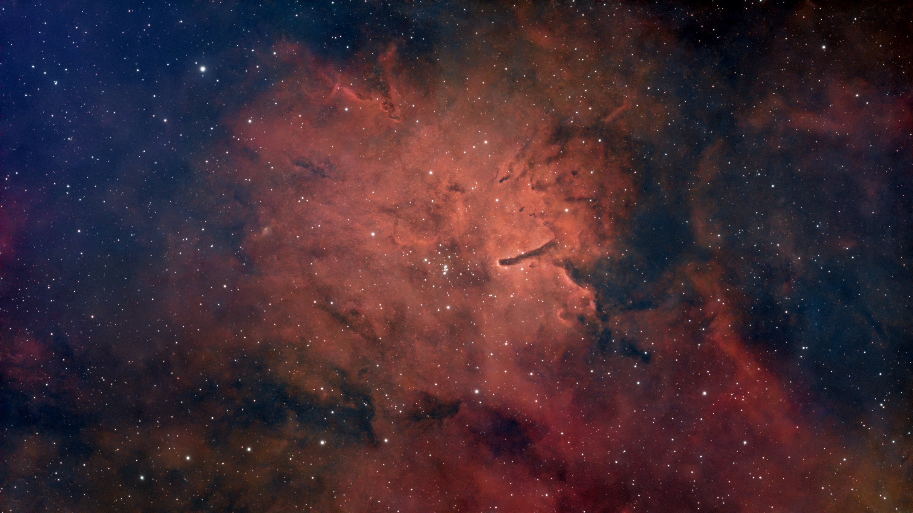
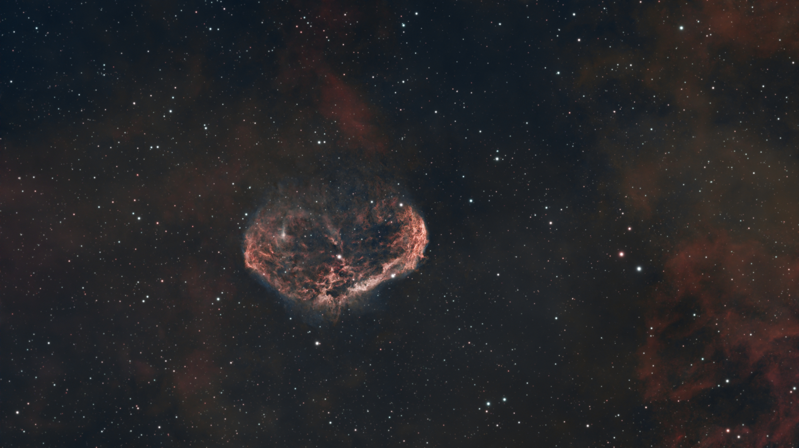
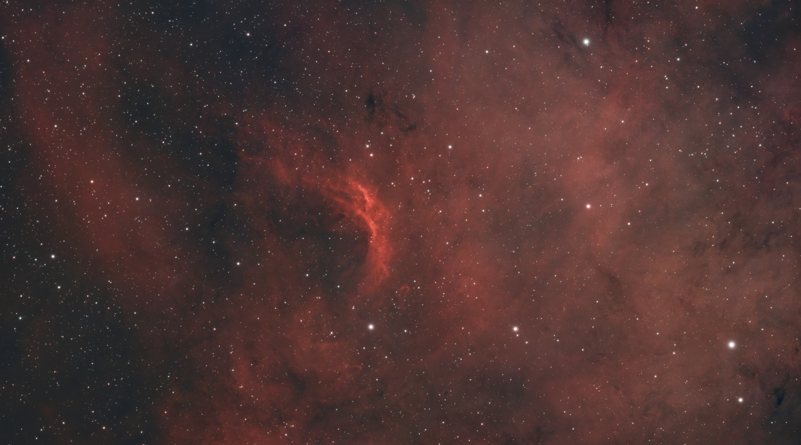
Wanting to take images of galaxies and nebulae, I took the leap and upgraded my old Celestron NexStar 4SE to a custom built deep-space rig. I had no idea what I was getting into and I didn't know that the photos taken were raw and needed to be processed. So the images you see below are riddle with issues, but seeing the faint galaxies and nebulae in images I took, knowing I photographed them from my backyard, was a huge accomplishment for me.
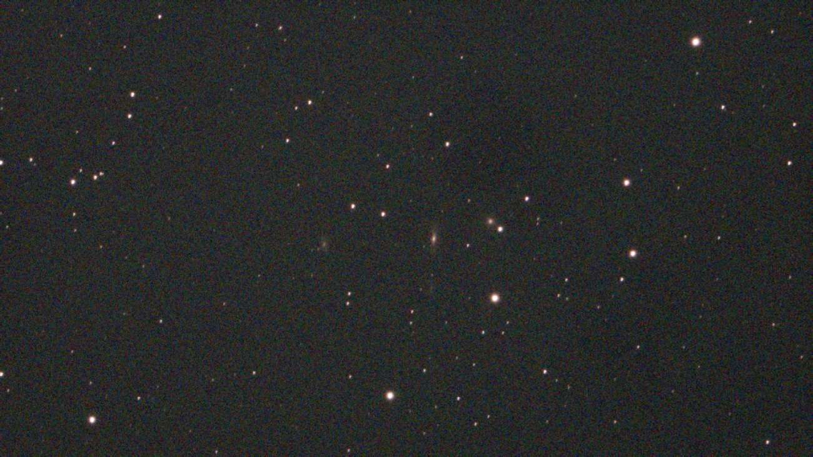
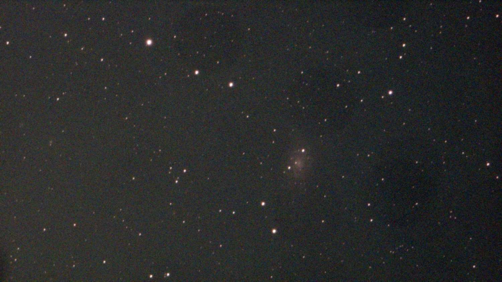
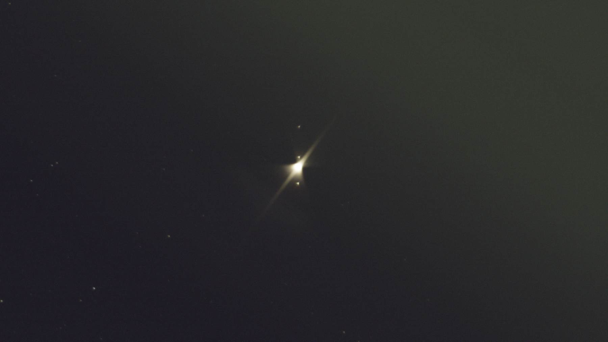
After many nights spent figuring out how to use a DLSR for astrophotography in below freezing temperatures just for the Moon to drift out of sight behind a tree, I finally was able to take high quality photos of the Moon. From learning how to properly focus, adjust ISO, and keep my gloves off to adjust settings on my camera just long enough to not get frostbite, astrophotography began to seem less menacing.
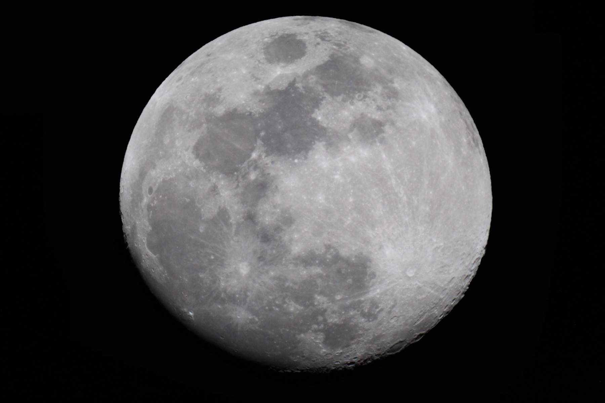
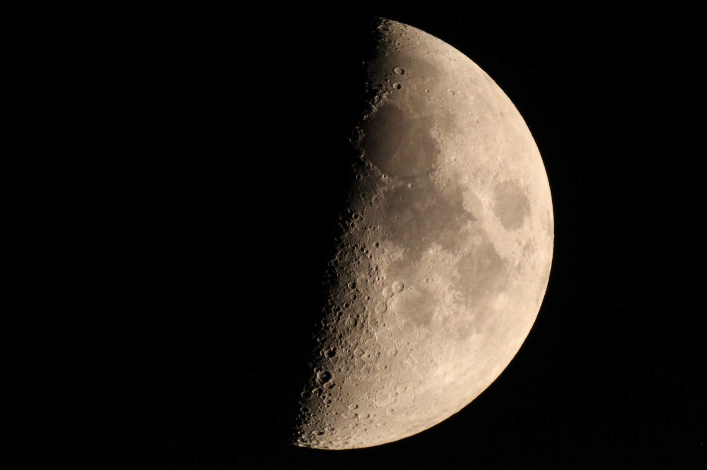
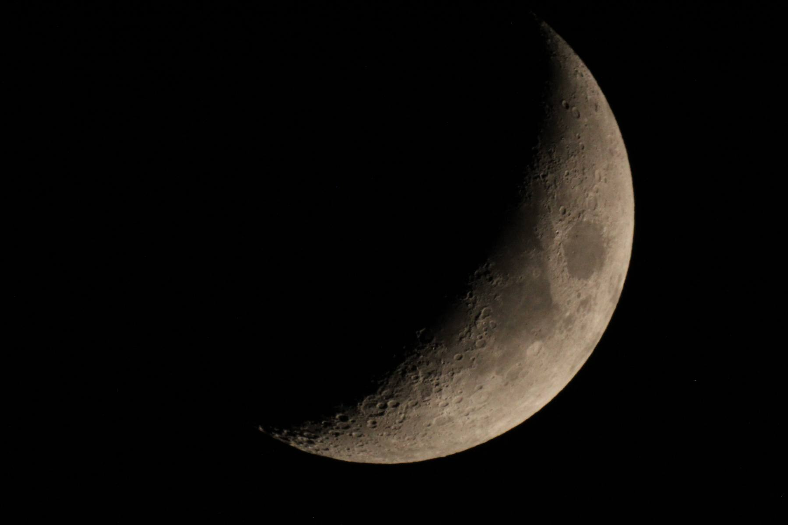
My first telescope wasn't able to track objects in the sky and I couldn't connect a camera to it. So I upgraded to a Celestron NexStar 4SE which was my first real, humble astrophotography setup. I was just learning how to get everything in to focus and how to use a DSLR, along with all of the different settings tucked into every nook and cranny of the menu.
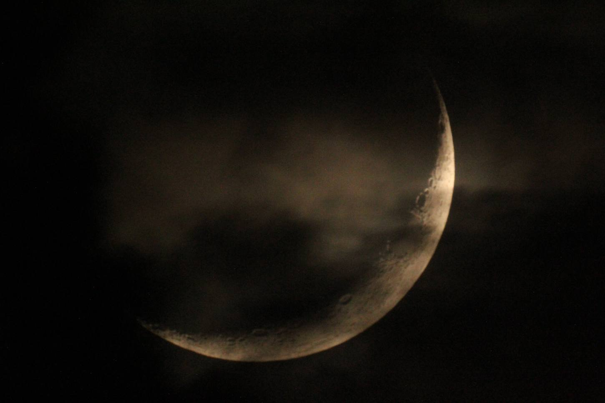
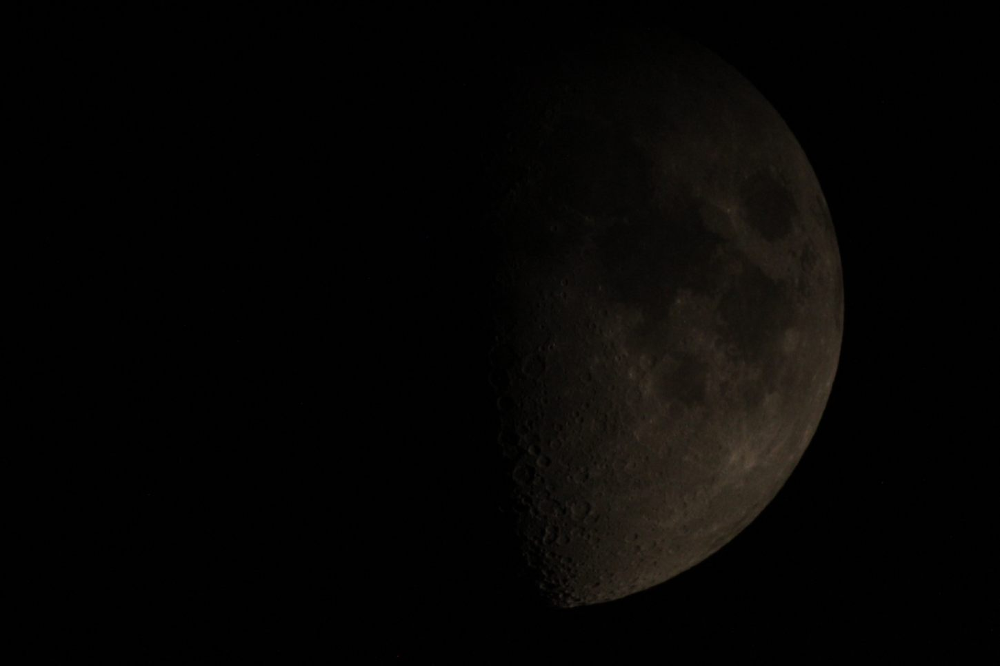
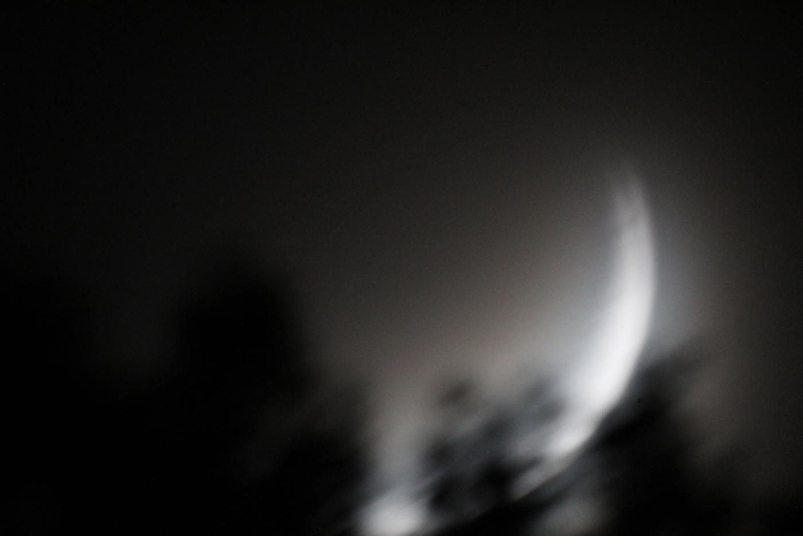
This is where it all began. I didn't know what I was getting into; I just knew I wanted to learn what hid behind the shimmering dots in the sky. Through using my phone at 10x zoom to photograph the Moon and even pointing it through my first telescope's - Celestron AstroMaster 70's - eyepiece to photograph a random star, I wanted to see as much as I could.
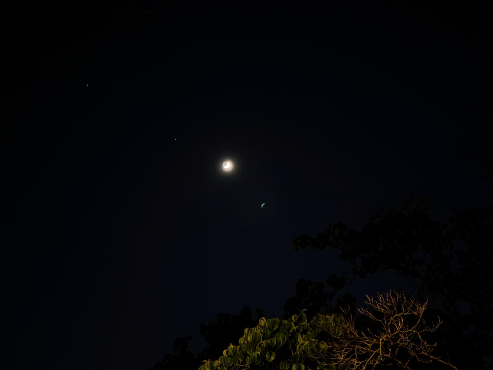
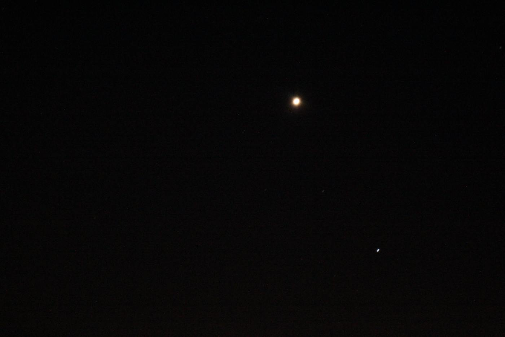
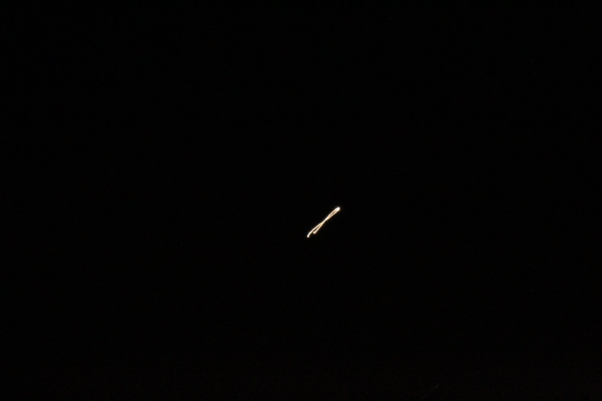